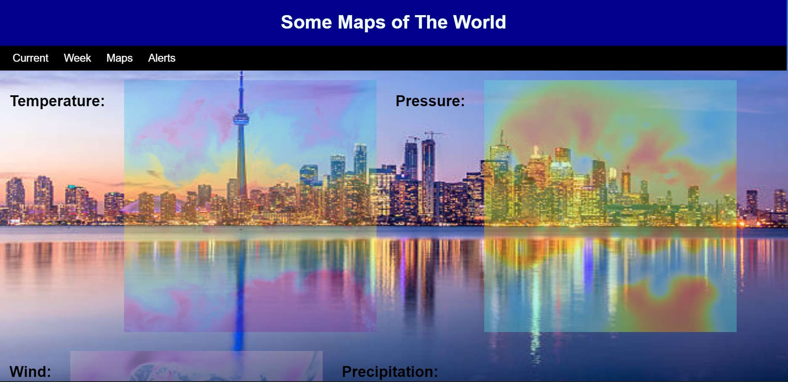
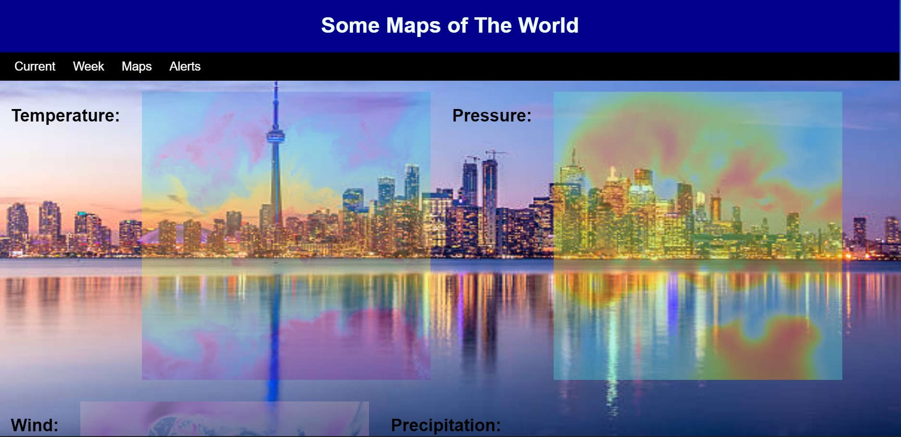
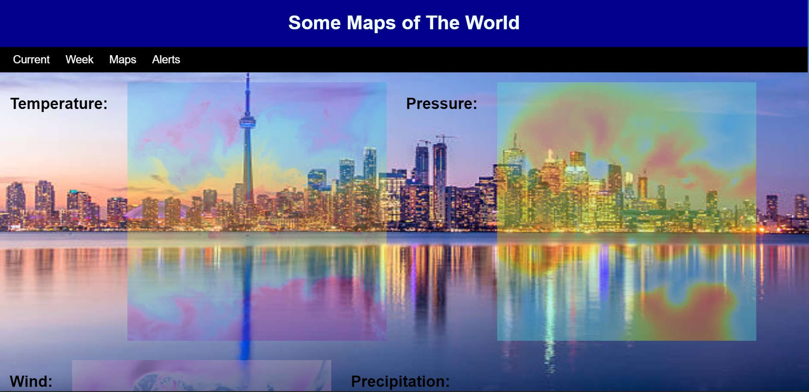

Shows the current weather in Toronto.
The weather for the week.
Weather Maps

Shows the current weather in Toronto.
The weather for the week.
Weather Maps
This is a web app that uses flask and the OpenWeatherMap API to show Toronto's weather.
What it does and how I made it:
The Toronto's Weather Web App (TWWA) was made using the Flask framework. It displays Toronto's current weather, weather for the next 7 days, weather maps of the world, and national weather alerts. It uses the OpenWeatherMap API to get the data about Toronto's weather.
Why I chose to make it:
I chose to make the TWWA because I wanted to get more practice with the Flask framework, using APIs, and I felt it would also be pretty useful.